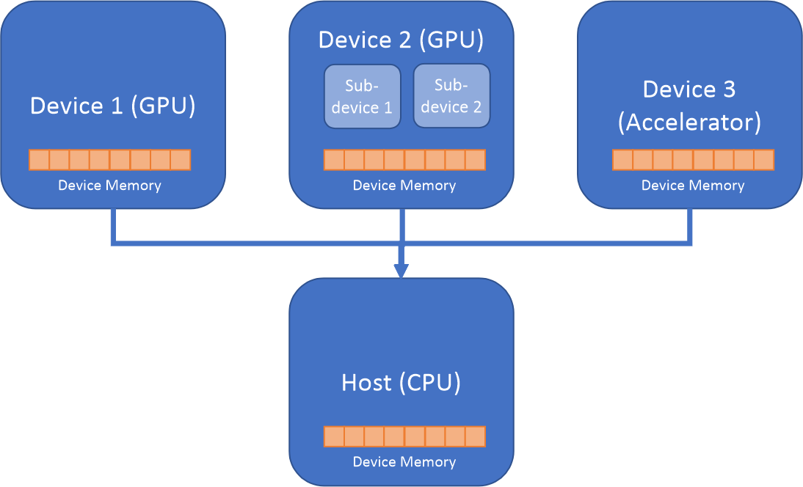

Heterogeneous computing¶
Device Offload¶
Python is an interpreted language, which implies that most of Python codes will run on CPU, and only a few data parallel regions will execute on data parallel devices. That is why the concept of host and offload devices is useful when it comes to conceptualizing a heterogeneous programming model in Python.
{kind=link}
The above diagram illustrates the host (the CPU which runs Python interpreter) and three devices (two GPU devices and one attached accelerator device). Data Parallel Extensions for Python offer a programming model where a script executed by Python interpreter on host can offload data parallel kernels to user-specified device. A kernel is the data parallel region of a program submitted for execution on the device. There can be multiple data parallel regions, and hence multiple offload kernels.
Kernels can be pre-compiled into a library, such as dpnp, or, alternatively, directly coded
in a programming language for heterogeneous computing, such as OpenCl* or DPC++ .
Data Parallel Extensions for Python offer the way of writing kernels directly in Python
using Numba* compiler along with numba-dpex, the Data Parallel Extension for Numba*.
One or more kernels are submitted for execution into a queue targeting an offload device. For each device one or more queues can be created. In most cases you won’t need to work with device queues directly. Data Parallel Extensions for Python will do necessary underlying work with queues for you through the Compute-Follows-Data.
Compute-Follows-Data¶
Since data copying between devices is typically very expensive, for performance reasons it is essential
to process data close to where it is allocated. This is the premise of the Compute-Follows-Data programming model,
which states that the compute will happen where the data resides. Tensors implemented in dpctl and dpnp
carry information about allocation queues, and hence, about the device on which an array is allocated.
Based on tensor input arguments of the offload kernel, it deduces the queue on which the execution takes place.

The above picture illustrates the Compute-Follows-Data concept. Arrays A and B are inputs to the
Offload Kernel. These arrays carry information about their allocation queue (Device Queue) and the
device (Device 1) where they were created. According to the Compute-Follows-Data paradigm
the Offload Kernel will be submitted to this Device Queue, and the resulting array C will
be created on the Device Queue associated with the Device 1.
Data Parallel Extensions for Python require all input tensor arguments to have the same allocation queue, otherwise an exception will be thrown. For example, the following usages will result in the exception.

Input tensors are on different devices and different queues. Exception is thrown.¶

Input tensors are on the same device but queues are different. Exception is thrown.¶

Data belongs to the same device, but queues are different and associated with different sub-devices.¶
Copying data between devices and queues¶
Data Parallel Extensions for Python create one canonical queue per device so that in normal circumstances you do not need to directly manage queues. Having one canonical queue per device allows you to copy data between devices using to_device() method:
a_new = a.to_device(b.device)
Array a will be copied to the device associated with array b into the new array a_new.
The same queue will be associated with b and a_new.
Alternatively, you can do this as follows:
a_new = dpnp.asarray(a, device=b.device)
a_new = dpctl.tensor.asarray(a, device=b.device)
Creating additional queues¶
As previously indicated Data Parallel Extensions for Python automatically create one canonical queue per device, and you normally work with this queue implicitly. However, you can always create as many additional queues per device as needed, and work with them explicitly.
A typical situation when you will want to create the queue explicitly is for profiling purposes. Read Data Parallel Control documentation for more details about queues.